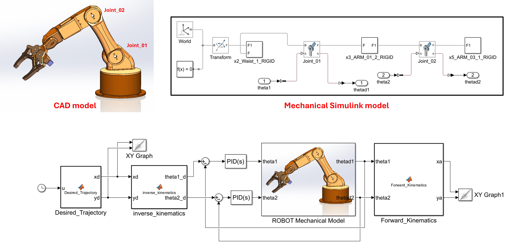

Modeling and Simulation of a 5-DOF Robotic Arm
In this personal project, I designed and developed a 5-degree-of-freedom (DOF) robotic arm equipped with a functional gripper using SolidWorks. Get the CAD model here. The final model then was exported to MATLAB/Simulink using Simscape Multibody Link. In MATLAB, I developed and implemented a control algorithm for two degrees of freedom (joint_01 and joint_02) of the robotic arm. A desired moevement was prescribed to the model and PIDs were used and tuned to control the model to follow the desired motionh.
